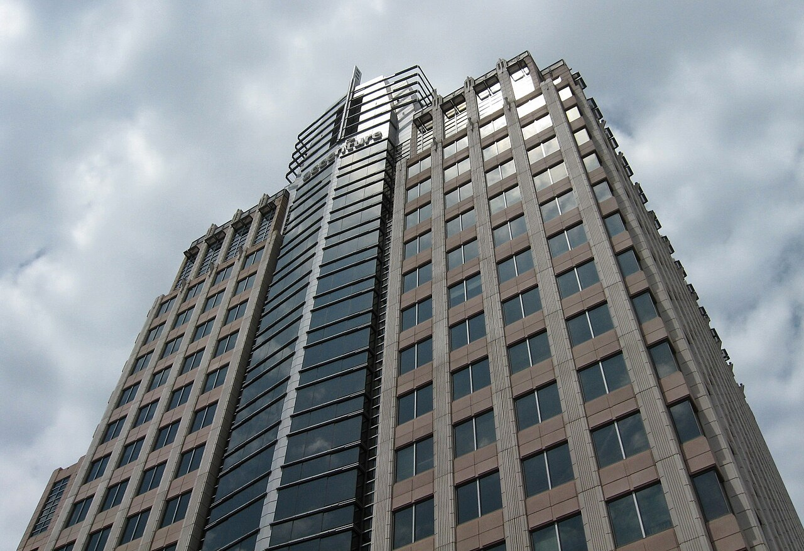

Accenture raised buybacks 63% and paid out 99% of its free cash flow


Accenture's revenue grew 6.5% to $74.2 billion in fiscal 2026, and its operating margin rose to 15.4%, the highest of the eight years covered here. Free cash flow grew 6.9% to $11.6 billion. The company spent $11.5 billion on share buybacks and dividends, 99% of its free cash flow, and borrowed more: total debt ended the year at $10.1 billion.
Revenue grew faster in managed services, helped by a weaker dollar
Revenue growth of 6.5% followed 7.4% in fiscal 2025 and 1.2% in fiscal 2024. The company said a weaker US dollar made its growth in dollars about 2% higher than its growth in local currency. Managed services revenue rose 8% in dollars and 6% in local currency. Consulting revenue rose 5% in dollars and 3% in local currency. New bookings, the value of contracts signed in the year, were $84.54 billion, according to the earnings release.
Over seven years revenue has grown 1.7 times, from $43.2 billion in fiscal 2019, a compound rate of 8.0% a year.
Margin rose as severance costs fell
Operating income rose 11.5% to $11.4 billion, and operating margin widened by 0.7 points to 15.4%. Part of the gain came from smaller one-off costs. Accenture finished a six-month business optimization program in the first quarter of fiscal 2026. It recorded $308 million of costs for the program in fiscal 2026 and $615 million in fiscal 2025, mainly for employee severance. Excluding those costs, the company's adjusted operating margin was 15.8%, against 15.6% a year earlier.
Gross margin held at about 32% of revenue. The company said lower payroll costs were partly offset by higher non-payroll costs.
Net income rose 9.0% to $8.4 billion. The effective tax rate went up to 25.1% from 23.7%, which the company put mainly down to smaller tax benefits from share-based payments. Diluted earnings per share rose faster than net income, by 11.6% to $13.56, because the diluted share count fell 2.2% to 618 million.
Payouts to shareholders took almost all of free cash flow
Cash from operations rose 7.7% to $12.4 billion. Capital spending stayed small for a business built on people: $743 million, or 1.0% of revenue. That left free cash flow of $11.6 billion, 15.7% of revenue.
Spending on share buybacks rose 62.8% to $7.5 billion. The earnings release says Accenture repurchased or redeemed 39.9 million shares in the year. Dividends paid rose 7.8% to $4.0 billion. Together, buybacks and dividends came to 99% of free cash flow, up from 77% in fiscal 2025.
Accenture also kept buying companies. It spent $4.9 billion on acquisitions in fiscal 2026, up from $1.5 billion, and $15.5 billion over the last four years. Buybacks, dividends and acquisitions together came to 1.4 times free cash flow in fiscal 2026.
Debt went from almost nothing to $10.1 billion in three years
Accenture had $43 million of debt at August 31, 2023. It had $1.0 billion a year later, $5.1 billion at August 31, 2025 and $10.1 billion at August 31, 2026. The 10-K says the long-term debt is senior unsecured notes with a principal amount of $10 billion, maturing between 2027 and 2036. Interest expense rose 32% to $303 million, which the company said reflected a higher average debt balance. Operating income was 37.6 times interest expense.
Cash and short-term investments of $12.8 billion still exceeded debt, by $2.7 billion at August 31, 2026. At August 31, 2023 the gap was $9.0 billion. Shareholders' equity was $31.6 billion, little changed from $31.2 billion a year earlier, as payouts used up most of the year's profit.
Eight years of figures
Net income is the income attributable to Accenture plc shareholders, the figure behind earnings per share; it leaves out the share of profit that belongs to noncontrolling interests. Accenture's workforce was about 814,000 people at August 31, 2026, up from about 779,000 a year earlier, according to the 10-K.
Sources: Form 10-K (SEC EDGAR) · Form 10-K filing index · EDGAR company facts for Accenture · Accenture fiscal 2026 fourth-quarter earnings release (Exhibit 99.1). More figures for Accenture are on its company page.